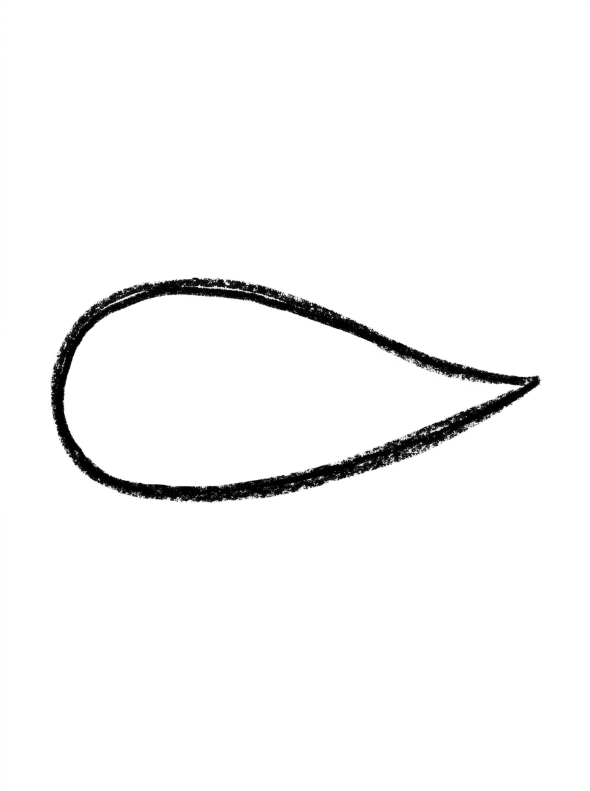
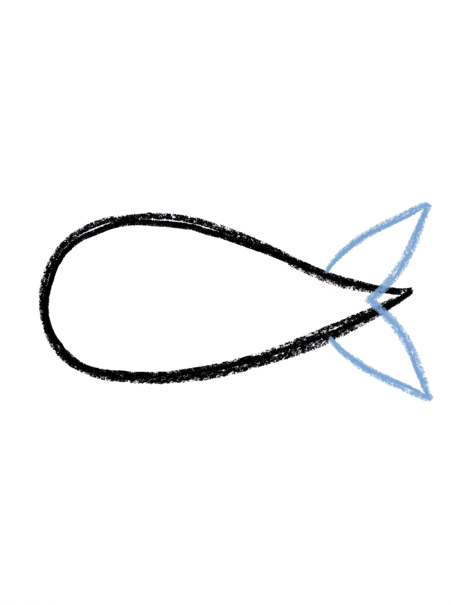
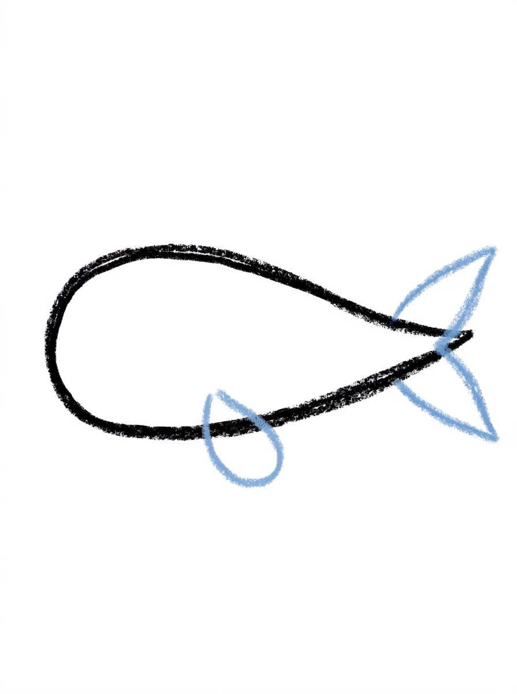
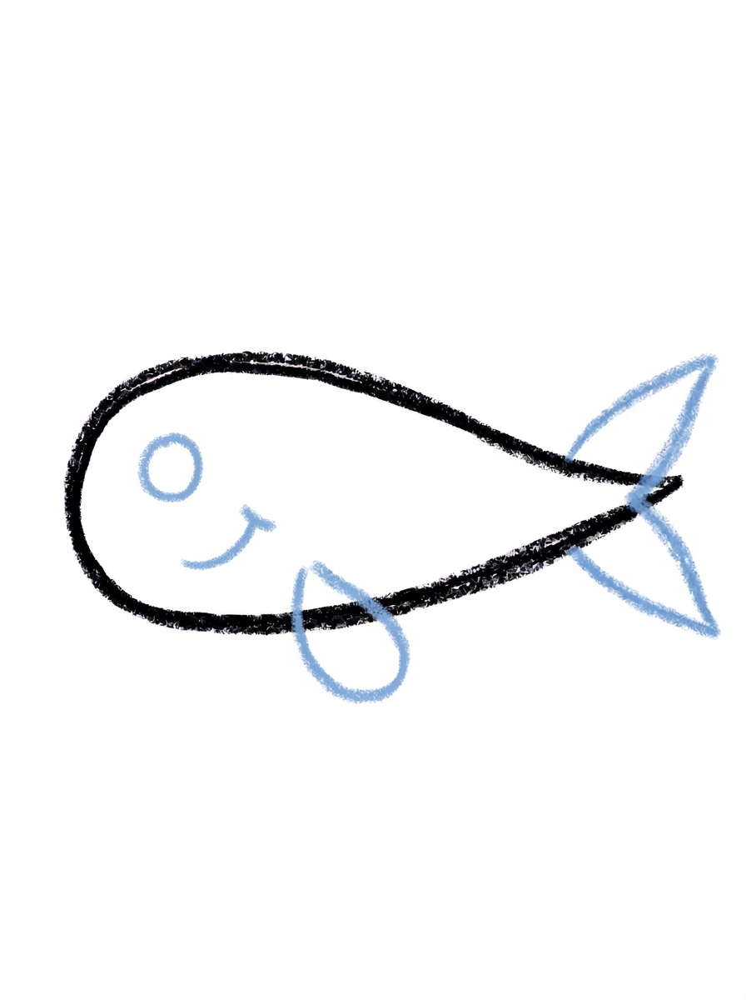
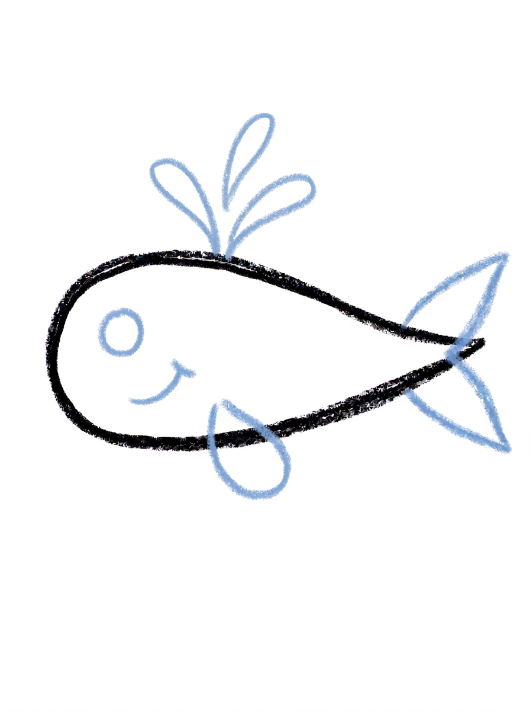

Whale Drawing for Kids How to Draw A Whale in 6 Easy Steps
Quick Answer
Draw a whale in six easy steps: start with one wide oval body tapered to a point, add a two-lobed tail fin and a teardrop flipper, give it a dot eye and a smile, fan three lines on top for the spout, then color it blue. Made for ages 3 and up — no signup needed, just print and draw.
At a Glance
- Subject: How to draw a whale
- Ages: 3+
- Steps: 6 steps
- Time: ~15 min
- Difficulty: Easy
- Supplies: Paper, crayons
A whale is one of the most satisfying animals for a child to draw, because the biggest creature in the ocean starts as a single oval lying on its side. Add a tail fin, one little flipper, and a splashing water spout, and that one simple shape turns into a gentle giant kids are proud of.
✏️ Draw Your Whale in 6 Easy Steps
One step per box — this step by step whale drawing shows each new part in a different color so kids can see exactly what changed.
Step 1: The Body

Draw one wide oval lying on its side, round at one end and tapering to a point at the other end. This is your whale's body.
Step 2: The Tail Fin

At the pointed end of the body, draw the tail fin: two pointed lobes joined at the center, like a fish tail lying sideways.
Step 3: The Flipper

Draw one small teardrop shape under the middle of the body for the side flipper.
Step 4: The Face

Draw one round dot eye inside the body near the round end, and one small curved smile line just below and behind the eye.
Step 5: The Water Spout

On top of the body, draw three short curved lines fanning up from one point — this is the water spout.
Step 6: Color It In

Color your whale! Medium blue on top and pale light blue on the belly, darker blue for the tail fin and flipper, black for the eye, dark blue for the mouth, and light sky blue for the water spout. Great drawing!
📊 Whale Drawing by Age
Every age can join in — just adjust the job.
| Age | What they can do | Tip |
|---|---|---|
| 3-4 | Draw the wide oval body and splash on the blue coloring at the end. | Draw the oval big and wide — the tail, flipper, and face all need room to fit around it. |
| 4-5 | Add the two-lobed tail fin, the teardrop flipper, and the dot eye with its smile. | Show them how the tail looks like a fish tail lying sideways; that picture makes the shape click. |
| 6+ | Complete all six steps, including the three-line water spout and the two-tone blue coloring. | Let them add waves and a second baby whale to turn the tutorial into a full ocean scene. |
🖨️ Download Your Free Whale Drawing Printable
The printable lays out all 6 steps one per box, big enough for little hands — kids draw right alongside each step.
⬇️ Open Free Printable 🖨️ Print🎁 Free printable for ages 3+
🐳 The Whale's Ocean Home
A whale this friendly deserves a whole ocean around it. Have your child draw wavy lines under the whale for water, a few tiny fish and bubbles nearby, and a smiling sun or a sailboat up above. Then ask them to draw a baby whale following behind — same six steps, just smaller — and the page becomes a whale family portrait.
What You'll Need to Draw A Whale
You only need a pencil, an eraser, and the printed tutorial page with all six steps. For coloring, keep two or three blues handy — a medium blue for the top, a pale blue for the belly, and a darker blue for the tail fin and flipper — plus black for the eye and a light sky blue for the water spout.
What They're Learning
This tutorial practices one big, confident shape — a wide oval — and then builds on it with a mirrored tail fin made of two pointed lobes, a teardrop flipper, and a dot-and-curve face. The water spout teaches lines that fan out from a single point, and the two-tone coloring (darker on top, pale on the belly) is many kids' first try at showing which way is up in a picture.
Make It Yours
After the first whale, try a baby whale swimming beside it, a whale spouting heart-shaped splashes instead of lines, or a night-ocean version in deep blues and purples with a crescent moon. Kids also enjoy turning the spout into a tiny fountain of stars, or drawing the whale mid-breach with its body curved up out of big foamy waves.
🛒 Our Favorite Drawing Supplies
These are the supplies we reach for in our own home — washable (because kids), quality paper, and enough colors to avoid fights.
As an Amazon Associate, MomYouNeedThis earns from qualifying purchases — at no extra cost to you.
💡 Whale Drawing Tips for Parents
The tail fin in step 2 is the trickiest shape in the tutorial. The picture that helps most: it looks like a fish tail lying sideways, with two pointed lobes joined at the center, attached right at the body's pointed tip. If the first try looks like a flag or a bow, erase just the fin and redraw it wider — the lobes should spread above and below the body's center line.
Keep track of which end is which before the face goes on in step four: the eye and smile belong at the round end, never the pointed end. A quick way to help younger kids is to lightly mark the round end with a tiny dot as soon as the body is drawn, so the face lands in the right place the first time.
✏️ Whale Drawing Step by Step
This whale drawing hangs almost everything on one shape: a single wide oval, round at one end and tapering to a point at the other, becomes the whole body. Every step after that bolts one feature onto the oval — the tail at the pointed end, the flipper under the middle, the face at the round end, the spout on top.
So that first shape needs elbow room. The spout fans upward from the top of the body and the flipper hangs below it, which means an oval drawn so big it nearly touches the page edges leaves nowhere for either to go. Big and centred, with clear space above and below, is the goal — shrinking an oversized oval early is far easier than squeezing a spout into a margin later.
Decide the direction before the pencil moves, too. The pointed end will carry the tail and the round end will carry the face, and that choice is locked in by the first oval — it is worth a second's thought about which way your child wants the whale to swim before step one begins.
See free whale printable for more.
✏️ One Shape Per Step, Six Steps Total
Four quick checks keep a whale drawing honest. After step two, count the tail lobes: exactly two pointed lobes, one spreading above the body's centre line and one below it, joined in the middle. A single lobe, or both lobes on the same side, leaves the tail looking lopsided.
After step three, check the flipper's address: the little teardrop should hang under the middle of the body. Slid too far forward it crowds the face; too far back it starts to look like a second tail. The middle of the belly is its home.
After step five, trace the spout back to its base: all three curved lines should start from the same single point on top of the body and fan apart as they rise — lines starting from three separate points read as hair, not water. Finish with the two-tone check in step six: medium blue back, pale belly, and the tail and flipper darker than both.
See free whale printable for more.
🌊 Give Your Whale an Ocean
The finished whale deserves water. Two or three rows of gentle wavy lines underneath the body turn a floating animal into a swimming one, and they take seconds — the waves do not need to be neat, just roughly parallel, following the curve of the belly.
Bubbles add the story. Draw small circles rising from near the whale's smile, each one a little bigger than the one below it, and the eye reads them as breath travelling up. A few tiny fish fill the empty corners for free: each one is just a pointed oval with a small triangle tail, two shapes your child already knows.
For a bigger project, repeat the same six steps at half size behind the first whale and colour it the same way: a calf following its parent. The pair makes a finished picture worth the fridge door, and the second whale is always faster than the first.
See free whale printable for more.
❓ Whale Drawing FAQs
What is the easiest way to draw a whale for kids?
Start with one wide oval lying on its side, round at one end and pointed at the other. Add a two-lobed tail fin at the point, a teardrop flipper underneath, a dot eye and smile at the round end, and a three-line water spout on top.
What age is this whale drawing for?
It is made for ages 3 and up. Younger kids can draw the oval body and do the coloring, while older kids can add the tail fin, flipper, and spout themselves.
What supplies do we need?
Just a pencil, an eraser, and crayons or markers — a few shades of blue, plus black for the eye.
Is the printable really free?
Yes — every printable on MomYouNeedThis is 100% free to download and print. No signup, no payment, just tap the download button.
How do I print the whale tutorial?
Print at 100% scale, not 'fit to page', so the step pictures stay their true size. Regular letter paper works perfectly.
Which end of the whale is the head?
The round end. The eye and smile go near the round end in step four, while the pointed end gets the tail fin in step two.
What is the water spout on top of the whale?
It is the spray a real whale makes when it breathes out through the blowhole on top of its head. In the drawing it is just three short curved lines fanning up from one point.
Can we draw a baby whale next to it?
Yes — repeat the same six steps at a smaller size and you have a calf. Kids love drawing the baby following right behind the big whale's tail.
📚 Keep Exploring
- ✏️ All 53 Drawing Tutorials 53 free step-by-step drawing tutorials for kids.
- 🐾 Animal Coloring Free printable animal coloring pages for little learners.
- ✏️ Drawing Practice Free printable drawing pre-writing worksheet for toddlers.